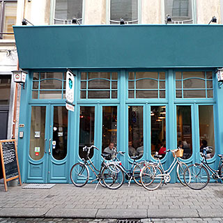

ViaVia

Wolstraat, Antwerp, 2000, Belgium 03 226 4749 http://www.viaviacafe.com/ 51.22136, 4.404391
Large versatile cafe - good food and drinks
There is a lot to this large multi-story cafe, so you would have to visit several times in various circumstances to try it out properly. Downstairs, it is a bar that is a good place to spend all day, with various combinations of eating and drinking. Upstairs, there are additional floors that make this a great location for events.
The atmosphere is pretty relaxed, but sociable, with the kind of furniture arrangement that makes it likely that you'll end up talking to other customers. Conveniently, there is also free wi-fi.